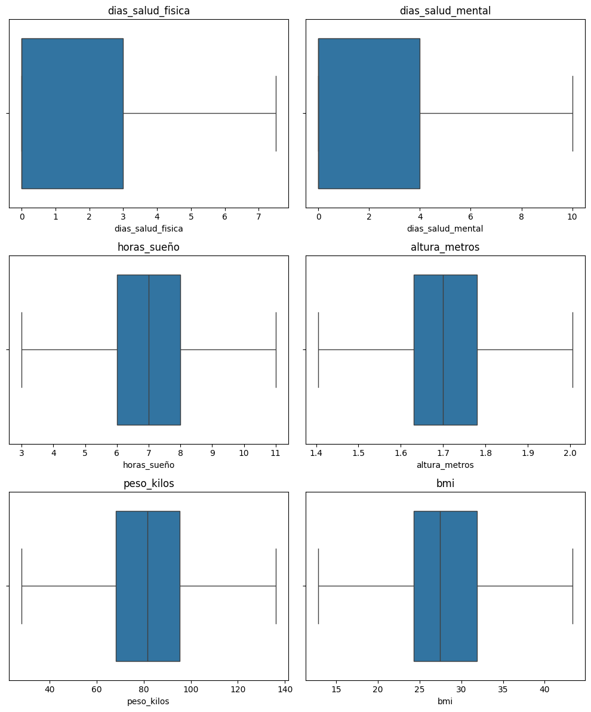
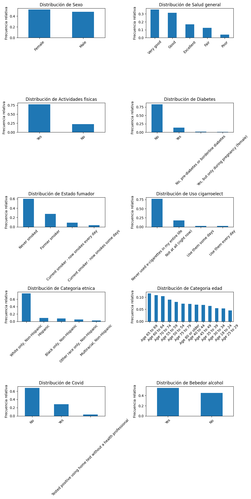
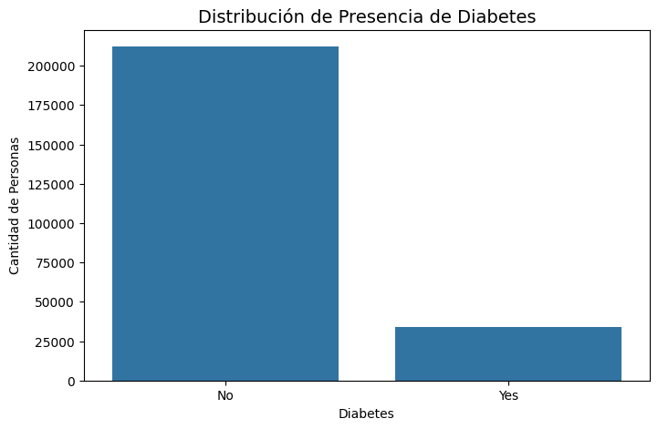
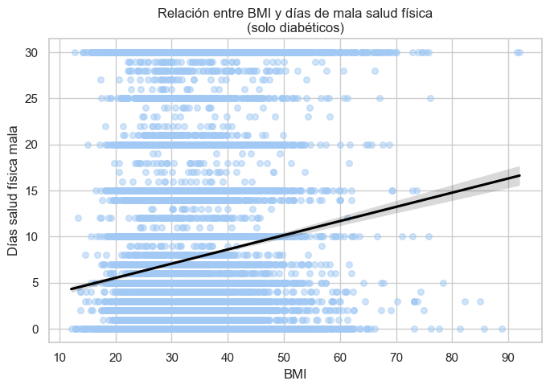
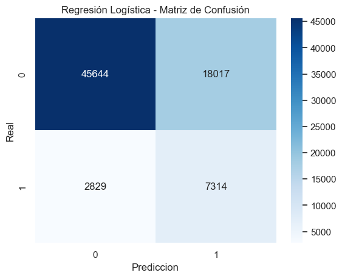
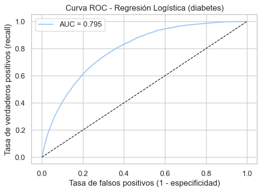
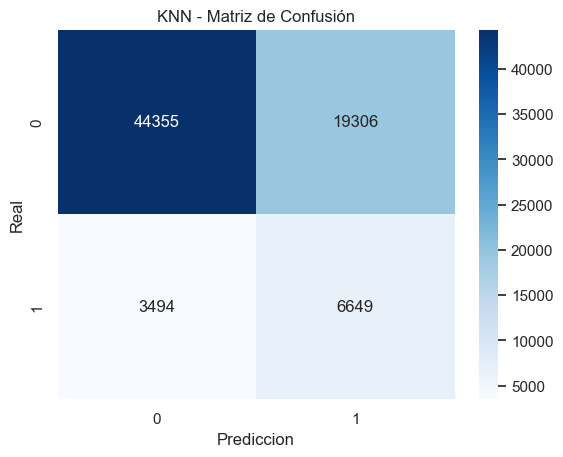
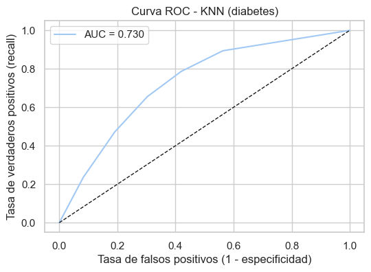

Entregable 2#
import pandas as pd
import matplotlib.pyplot as plt
import seaborn as sns
import math
from sklearn.neighbors import KNeighborsClassifier, KNeighborsRegressor
from sklearn.metrics import (confusion_matrix, classification_report, accuracy_score,
precision_score, recall_score, f1_score, roc_auc_score, roc_curve,
mean_absolute_error, mean_squared_error, r2_score, root_mean_squared_error)
df_original= pd.read_csv('heart_2022_no_nans.csv')
df= df_original.copy()
Visualización del Dataset#
df.head()
| State | Sex | GeneralHealth | PhysicalHealthDays | MentalHealthDays | LastCheckupTime | PhysicalActivities | SleepHours | RemovedTeeth | HadHeartAttack | ... | HeightInMeters | WeightInKilograms | BMI | AlcoholDrinkers | HIVTesting | FluVaxLast12 | PneumoVaxEver | TetanusLast10Tdap | HighRiskLastYear | CovidPos | |
|---|---|---|---|---|---|---|---|---|---|---|---|---|---|---|---|---|---|---|---|---|---|
| 0 | Alabama | Female | Very good | 4.0 | 0.0 | Within past year (anytime less than 12 months ... | Yes | 9.0 | None of them | No | ... | 1.60 | 71.67 | 27.99 | No | No | Yes | Yes | Yes, received Tdap | No | No |
| 1 | Alabama | Male | Very good | 0.0 | 0.0 | Within past year (anytime less than 12 months ... | Yes | 6.0 | None of them | No | ... | 1.78 | 95.25 | 30.13 | No | No | Yes | Yes | Yes, received tetanus shot but not sure what type | No | No |
| 2 | Alabama | Male | Very good | 0.0 | 0.0 | Within past year (anytime less than 12 months ... | No | 8.0 | 6 or more, but not all | No | ... | 1.85 | 108.86 | 31.66 | Yes | No | No | Yes | No, did not receive any tetanus shot in the pa... | No | Yes |
| 3 | Alabama | Female | Fair | 5.0 | 0.0 | Within past year (anytime less than 12 months ... | Yes | 9.0 | None of them | No | ... | 1.70 | 90.72 | 31.32 | No | No | Yes | Yes | No, did not receive any tetanus shot in the pa... | No | Yes |
| 4 | Alabama | Female | Good | 3.0 | 15.0 | Within past year (anytime less than 12 months ... | Yes | 5.0 | 1 to 5 | No | ... | 1.55 | 79.38 | 33.07 | No | No | Yes | Yes | No, did not receive any tetanus shot in the pa... | No | No |
5 rows × 40 columns
Limpieza de nombres de columnas#
df.columns = ['estado' , 'sexo' , 'salud_general' , 'dias_salud_fisica' , 'dias_salud_mental' , 'ultimo_chequeo' , 'actividades_fisicas' , 'horas_sueño' , 'dientes_removidos' , 'ataque_cardiaco' , 'angina' , 'ACV' , 'asma' , 'cancer_piel' , 'EPOC' , 'trastorno_depre' , 'enfermedad_riñon' , 'artritis' , 'diabetes' , 'sordo_semisordo' , 'ciego_semiciego' , 'dif_concentracion' , 'dif_caminar' , 'dif_vestirduchar' , 'dif_encargo' ,'estado_fumador' , 'uso_cigarroelect' , 'escaner_torax' , 'categoria_etnica' , 'categoria_edad' , 'altura_metros' , 'peso_kilos' , 'bmi' , 'bebedor_alcohol' , 'prueba_VIH' , 'gripa_vac' , 'pneumo' , 'tetanos' , 'alto_riesgo_ap' , 'covid']
df.columns
Index(['estado', 'sexo', 'salud_general', 'dias_salud_fisica',
'dias_salud_mental', 'ultimo_chequeo', 'actividades_fisicas',
'horas_sueño', 'dientes_removidos', 'ataque_cardiaco', 'angina', 'ACV',
'asma', 'cancer_piel', 'EPOC', 'trastorno_depre', 'enfermedad_riñon',
'artritis', 'diabetes', 'sordo_semisordo', 'ciego_semiciego',
'dif_concentracion', 'dif_caminar', 'dif_vestirduchar', 'dif_encargo',
'estado_fumador', 'uso_cigarroelect', 'escaner_torax',
'categoria_etnica', 'categoria_edad', 'altura_metros', 'peso_kilos',
'bmi', 'bebedor_alcohol', 'prueba_VIH', 'gripa_vac', 'pneumo',
'tetanos', 'alto_riesgo_ap', 'covid'],
dtype='object')
Se han reemplazado los nombres de las columnas por su traduccion al español.
Tipos de Datos#
df.info()
<class 'pandas.core.frame.DataFrame'>
RangeIndex: 246022 entries, 0 to 246021
Data columns (total 40 columns):
# Column Non-Null Count Dtype
--- ------ -------------- -----
0 estado 246022 non-null object
1 sexo 246022 non-null object
2 salud_general 246022 non-null object
3 dias_salud_fisica 246022 non-null float64
4 dias_salud_mental 246022 non-null float64
5 ultimo_chequeo 246022 non-null object
6 actividades_fisicas 246022 non-null object
7 horas_sueño 246022 non-null float64
8 dientes_removidos 246022 non-null object
9 ataque_cardiaco 246022 non-null object
10 angina 246022 non-null object
11 ACV 246022 non-null object
12 asma 246022 non-null object
13 cancer_piel 246022 non-null object
14 EPOC 246022 non-null object
15 trastorno_depre 246022 non-null object
16 enfermedad_riñon 246022 non-null object
17 artritis 246022 non-null object
18 diabetes 246022 non-null object
19 sordo_semisordo 246022 non-null object
20 ciego_semiciego 246022 non-null object
21 dif_concentracion 246022 non-null object
22 dif_caminar 246022 non-null object
23 dif_vestirduchar 246022 non-null object
24 dif_encargo 246022 non-null object
25 estado_fumador 246022 non-null object
26 uso_cigarroelect 246022 non-null object
27 escaner_torax 246022 non-null object
28 categoria_etnica 246022 non-null object
29 categoria_edad 246022 non-null object
30 altura_metros 246022 non-null float64
31 peso_kilos 246022 non-null float64
32 bmi 246022 non-null float64
33 bebedor_alcohol 246022 non-null object
34 prueba_VIH 246022 non-null object
35 gripa_vac 246022 non-null object
36 pneumo 246022 non-null object
37 tetanos 246022 non-null object
38 alto_riesgo_ap 246022 non-null object
39 covid 246022 non-null object
dtypes: float64(6), object(34)
memory usage: 75.1+ MB
Duplicados#
#Valores duplicados
print("\nNúmero de filas duplicadas:")
print(df.duplicated().sum())
Número de filas duplicadas:
9
df[df.duplicated()]
| estado | sexo | salud_general | dias_salud_fisica | dias_salud_mental | ultimo_chequeo | actividades_fisicas | horas_sueño | dientes_removidos | ataque_cardiaco | ... | altura_metros | peso_kilos | bmi | bebedor_alcohol | prueba_VIH | gripa_vac | pneumo | tetanos | alto_riesgo_ap | covid | |
|---|---|---|---|---|---|---|---|---|---|---|---|---|---|---|---|---|---|---|---|---|---|
| 5702 | Arizona | Female | Excellent | 0.0 | 0.0 | Within past year (anytime less than 12 months ... | Yes | 7.0 | None of them | No | ... | 1.63 | 56.70 | 21.46 | Yes | No | Yes | Yes | Yes, received Tdap | No | No |
| 87555 | Maryland | Female | Good | 0.0 | 0.0 | Within past year (anytime less than 12 months ... | Yes | 8.0 | None of them | No | ... | 1.65 | 45.36 | 16.64 | Yes | No | Yes | Yes | Yes, received Tdap | No | No |
| 88402 | Maryland | Male | Excellent | 0.0 | 0.0 | Within past year (anytime less than 12 months ... | Yes | 8.0 | None of them | No | ... | 1.75 | 65.77 | 21.41 | Yes | No | Yes | Yes | Yes, received Tdap | No | No |
| 137645 | New Jersey | Male | Good | 0.0 | 0.0 | Within past year (anytime less than 12 months ... | No | 8.0 | 6 or more, but not all | No | ... | 1.63 | 80.74 | 30.55 | Yes | No | No | No | No, did not receive any tetanus shot in the pa... | No | No |
| 174923 | Rhode Island | Female | Very good | 0.0 | 0.0 | Within past year (anytime less than 12 months ... | Yes | 7.0 | 1 to 5 | No | ... | 1.57 | 68.04 | 27.44 | Yes | No | Yes | Yes | No, did not receive any tetanus shot in the pa... | No | No |
| 184137 | South Dakota | Female | Fair | 30.0 | 0.0 | Within past year (anytime less than 12 months ... | Yes | 7.0 | None of them | No | ... | 1.75 | 90.72 | 29.53 | No | No | Yes | Yes | No, did not receive any tetanus shot in the pa... | No | No |
| 208013 | Vermont | Female | Very good | 0.0 | 0.0 | Within past year (anytime less than 12 months ... | Yes | 9.0 | None of them | No | ... | 1.65 | 79.38 | 29.12 | Yes | No | Yes | Yes | Yes, received tetanus shot but not sure what type | No | No |
| 216362 | Washington | Male | Excellent | 0.0 | 0.0 | Within past year (anytime less than 12 months ... | Yes | 7.0 | None of them | No | ... | 1.80 | 77.11 | 23.71 | Yes | Yes | Yes | No | Yes, received Tdap | No | No |
| 225974 | Washington | Male | Very good | 0.0 | 0.0 | Within past year (anytime less than 12 months ... | Yes | 7.0 | None of them | No | ... | 1.93 | 104.33 | 28.00 | Yes | Yes | Yes | Yes | No, did not receive any tetanus shot in the pa... | No | No |
9 rows × 40 columns
df= df.drop_duplicates() #limpiamos los duplicados
# Comprobamos limpieza
df.duplicated().sum()
np.int64(0)
Análisis de variable numéricas#
Descripción Estadística de variables numéricas.
#Descripción estadística
df.describe()
| dias_salud_fisica | dias_salud_mental | horas_sueño | altura_metros | peso_kilos | bmi | |
|---|---|---|---|---|---|---|
| count | 246013.000000 | 246013.000000 | 246013.000000 | 246013.000000 | 246013.000000 | 246013.000000 |
| mean | 4.119055 | 4.167292 | 7.021312 | 1.705150 | 83.615522 | 28.668258 |
| std | 8.405803 | 8.102796 | 1.440698 | 0.106654 | 21.323232 | 6.514005 |
| min | 0.000000 | 0.000000 | 1.000000 | 0.910000 | 28.120000 | 12.020000 |
| 25% | 0.000000 | 0.000000 | 6.000000 | 1.630000 | 68.040000 | 24.270000 |
| 50% | 0.000000 | 0.000000 | 7.000000 | 1.700000 | 81.650000 | 27.460000 |
| 75% | 3.000000 | 4.000000 | 8.000000 | 1.780000 | 95.250000 | 31.890000 |
| max | 30.000000 | 30.000000 | 24.000000 | 2.410000 | 292.570000 | 97.650000 |
Este resumen estadístico incluye medidas clave para seis variables cuantitativas del conjunto de datos, el cual contiene 246,022 registros:
dias_salud_fisicaydias_salud_mental
Representan la cantidad de días en el último mes que la persona reportó mala salud física o mental, respectivamente.Promedio de aproximadamente 4 días, pero con una mediana de 0, lo que indica que más del 50% de los encuestados no reportó problemas de salud en ese periodo.
Valor máximo de 30 días, indicando presencia de personas con malestar continuo durante todo el mes.
horas_sueño
Número de horas de sueño que reporta la persona por noche.Promedio de 7 horas, considerado dentro del rango saludable.
Rango desde 1 hasta 24 horas, lo que sugiere posibles valores atípicos o errores de reporte.
altura_metrosypeso_kilos
Medidas antropométricas del individuo.Altura media: 1.70 metros
Peso medio: 83.6 kg
Se observan valores extremos: altura máxima de 2.41 m y peso máximo de 292.57 kg, lo que podría requerir revisión o limpieza.
bmi(índice de masa corporal)
Calculado con base en el peso y la altura.Promedio de 28.7, clasificado como sobrepeso según la OMS.
Rango de 12.0 a 97.65, que incluye tanto casos de bajo peso como de obesidad extrema, posibles outliers o errores.
Variables numéricas en el Datatset.
num_cols = df.select_dtypes(include="number").columns
num_cols
Index(['dias_salud_fisica', 'dias_salud_mental', 'horas_sueño',
'altura_metros', 'peso_kilos', 'bmi'],
dtype='object')
# Histograma para distribución de variables numéricas
df[num_cols].hist(bins=30, figsize=(12, 10), edgecolor='black')
plt.suptitle("Distribuciones de variables numéricas", y=1.02)
plt.tight_layout()
plt.show()

Se presentan las distribuciones de seis variables numéricas clave del conjunto de datos, que permiten observar la forma de los datos y la presencia de posibles valores atípicos:
dias_salud_fisicaydias_salud_mental
Ambas variables muestran una distribución fuertemente asimétrica a la derecha (sesgada positiva), con un alto número de personas que reportan 0 días de mala salud en el último mes. También se observa un pequeño pico en el valor 30, lo que podría representar personas con malestar persistente o respuestas extremas.horas_sueño
La distribución tiene una forma aproximadamente normal, centrada entre 6 y 8 horas por noche. Existen pocos casos extremos con menos de 4 o más de 12 horas, lo cual podría indicar hábitos poco comunes o errores.altura_metros
Presenta una distribución simétrica y normal, centrada alrededor de 1.7 metros, lo esperado en una población general.peso_kilos
Exhibe una distribución asimétrica a la derecha, indicando que la mayoría de las personas pesan entre 60 y 100 kg, pero existen casos con pesos significativamente mayores, que podrían ser atípicos.bmi(índice de masa corporal)
También muestra una asimetría a la derecha, con una concentración de individuos en rangos de sobrepeso (25-30) y obesidad (>30). Hay valores superiores a 60, que podrían ser casos extremos o errores de digitación.
Análisis de Outliers#
plots_per_row = 2
n = len(num_cols)
rows = math.ceil(n/plots_per_row)
fig, axes = plt.subplots(rows, plots_per_row, figsize=(5*plots_per_row,4*rows))
for i, col in enumerate(num_cols):
ax = axes.flatten()[i]
sns.boxplot(x=df[col], ax=ax).set_title(col)
for ax in axes.flatten()[n:]: fig.delaxes(ax)
plt.tight_layout()

Los diagramas de caja permiten visualizar la dispersión de los datos y la presencia de valores atípicos (outliers) en cada variable. A continuación, se describe lo observado en cada caso:
dias_salud_fisicaydias_salud_mentalLa mayoría de los valores están concentrados entre 0 y 5 días.
Existen numerosos valores atípicos hacia la derecha, especialmente en 30 días, lo que puede representar respuestas extremas (posiblemente personas con malestar todo el mes).
horas_sueñoLa mediana se encuentra cerca de las 7 horas.
Hay outliers tanto en valores bajos (< 4 h) como altos (> 12 h), lo cual podría reflejar hábitos extremos o errores en la respuesta.
altura_metrosTiene una distribución más simétrica.
Se identifican valores atípicos por debajo de 1.3 m y por encima de 2.1 m, lo cual puede ser real o deberse a errores de captura.
peso_kilosSe identifican muchos outliers por exceso, especialmente en pesos mayores a 150 kg.
Aunque hay una tendencia normal, la dispersión sugiere una posible revisión o tratamiento de valores extremos.
bmi(índice de masa corporal)Muestra una concentración de datos en rangos de sobrepeso y obesidad.
Presenta numerosos valores atípicos hacia la derecha, superando incluso los 60 puntos de IMC, lo cual podría representar condiciones médicas graves o errores de digitación.
from sklearn.base import BaseEstimator, TransformerMixin
from sklearn.preprocessing import StandardScaler
import numpy as np
class ManejoAtipicos(BaseEstimator, TransformerMixin):
def __init__(self, metodo="iqr", estrategia="winsorizar"):
self.metodo = metodo
self.estrategia = estrategia
self.limites_ = {}
def fit(self, X, y=None):
X = pd.DataFrame(X)
for col in X.columns:
if self.metodo == "iqr":
Q1 = X[col].quantile(0.25)
Q3 = X[col].quantile(0.75)
IQR = Q3 - Q1
lim_inf = Q1 - 1.5 * IQR
lim_sup = Q3 + 1.5 * IQR
elif self.metodo == "percentil":
lim_inf = X[col].quantile(0.01)
lim_sup = X[col].quantile(0.99)
else:
raise ValueError("Método no soportado")
self.limites_[col] = (lim_inf, lim_sup)
return self
def transform(self, X):
X = pd.DataFrame(X).copy()
for col in X.columns:
lim_inf, lim_sup = self.limites_[col]
if self.estrategia == "eliminar":
X = X[(X[col] >= lim_inf) & (X[col] <= lim_sup)]
elif self.estrategia == "winsorizar":
X[col] = np.where(X[col] < lim_inf, lim_inf, X[col])
X[col] = np.where(X[col] > lim_sup, lim_sup, X[col])
return X.reset_index(drop=True)
atipicos = ManejoAtipicos(metodo="iqr", estrategia="winsorizar")
# Ajustar solo con TRAIN
atipicos.fit(df[num_cols])
# Transformar TRAIN y TEST
df_num_sin_atip= atipicos.transform(df[num_cols])
df_num_sin_atip
| dias_salud_fisica | dias_salud_mental | horas_sueño | altura_metros | peso_kilos | bmi | |
|---|---|---|---|---|---|---|
| 0 | 4.0 | 0.0 | 9.0 | 1.60 | 71.67 | 27.99 |
| 1 | 0.0 | 0.0 | 6.0 | 1.78 | 95.25 | 30.13 |
| 2 | 0.0 | 0.0 | 8.0 | 1.85 | 108.86 | 31.66 |
| 3 | 5.0 | 0.0 | 9.0 | 1.70 | 90.72 | 31.32 |
| 4 | 3.0 | 10.0 | 5.0 | 1.55 | 79.38 | 33.07 |
| ... | ... | ... | ... | ... | ... | ... |
| 246008 | 0.0 | 0.0 | 6.0 | 1.78 | 102.06 | 32.28 |
| 246009 | 0.0 | 7.0 | 7.0 | 1.93 | 90.72 | 24.34 |
| 246010 | 0.0 | 10.0 | 7.0 | 1.68 | 83.91 | 29.86 |
| 246011 | 2.0 | 2.0 | 7.0 | 1.70 | 83.01 | 28.66 |
| 246012 | 0.0 | 0.0 | 5.0 | 1.83 | 108.86 | 32.55 |
246013 rows × 6 columns
plots_per_row = 2
n = len(num_cols)
rows = math.ceil(n/plots_per_row)
fig, axes = plt.subplots(rows, plots_per_row, figsize=(5*plots_per_row,4*rows))
for i, col in enumerate(num_cols):
ax = axes.flatten()[i]
sns.boxplot(x=df_num_sin_atip[col], ax=ax).set_title(col)
for ax in axes.flatten()[n:]: fig.delaxes(ax)
plt.tight_layout()

df[num_cols] = df_num_sin_atip[num_cols]
Después del tratamiento de outliers podemos observar que los datos se visualizan más compactos y con una distribución manejable.
Análisis de Variables Categoricas#
# 4. Análisis de variables categóricas
cat_cols = df.select_dtypes(include="object").columns
# Lista de variables a graficar
vars = [
'sexo', 'salud_general', 'actividades_fisicas', 'diabetes',
'estado_fumador', 'uso_cigarroelect', 'categoria_etnica',
'categoria_edad', 'covid', 'bebedor_alcohol'
]
# Parámetros de la cuadrícula
per_row = 2
n = len(vars)
rows = math.ceil(n / per_row)
# Crear figura y ejes
fig, axes = plt.subplots(rows, per_row, figsize=(5*per_row, 4*rows), squeeze=False)
# Loop para generar cada gráfico
for ax, var in zip(axes.flat, vars):
df[var].value_counts(normalize=True) \
.plot(kind='bar', ax=ax)
ax.set_title(f"Distribución de {var.replace('_', ' ').capitalize()}")
ax.set_xlabel('')
ax.set_ylabel('Frecuencia relativa')
ax.tick_params(axis='x', rotation=45)
# Eliminar ejes vacíos si los hay
for ax in axes.flat[n:]:
fig.delaxes(ax)
plt.tight_layout()
plt.show()

Los gráficos muestran la distribución relativa de distintas variables categóricas relevantes para el análisis de salud. A continuación, se resume lo observado:
Sexo
Distribución equilibrada entre hombres y mujeres.
Salud general
La mayoría de los participantes se consideran con salud “Muy buena” o “Buena”.
Pocas personas se califican con salud “Pobre”.
Actividades físicas
Alrededor del 65% de los encuestados reportan realizar actividad física.
Diabetes
Más de la mitad no presenta diabetes.
Una pequeña proporción reporta haber tenido diabetes durante el embarazo o prediabetes.
Estado fumador
Predominan quienes nunca han fumado, seguidos por exfumadores.
Los fumadores actuales son minoría.
Uso de cigarrillos electrónicos
Mayoría nunca ha usado cigarrillos electrónicos.
Bajo uso diario o frecuente.
Categoría étnica
Predominio de personas blancas no hispanas.
Minorías étnicas representan porcentajes mucho menores.
Categoría de edad
La muestra está bien distribuida, aunque destaca el grupo de edad 65–69 años como el más representado.
Se observa una disminución progresiva hacia los grupos de menor edad.
Covid
Mayoría no ha reportado infección por COVID-19.
Una fracción pequeña reportó test positivo.
Bebedor de alcohol
Ligera mayoría indicó consumir alcohol.
# Reemplazar las clases por 'No'
df["diabetes"] = df["diabetes"].replace({
"Yes, but only during pregnancy (female)": "No",
"No, pre-diabetes or borderline diabetes": "No"
})
df['diabetes'].value_counts()
diabetes
No 212202
Yes 33811
Name: count, dtype: int64
plt.figure(figsize=(8,5))
sns.countplot(x="diabetes", data=df)
plt.title("Distribución de Presencia de Diabetes", fontsize=14)
plt.xlabel("Diabetes")
plt.ylabel("Cantidad de Personas")
plt.show()

La variable objetivo diabetes está fuertemente desbalanceada (86.3% No vs. 13.7% Sí). Esto es un reto importante en la construcción del modelo predictivo, ya que será necesario aplicar técnicas de balanceo y usar métricas adecuadas para garantizar que el modelo pueda identificar correctamente a las personas con diabetes y no se limite a predecir siempre la clase mayoritaria.
Analisis bivariado#
plt.figure(figsize=(6, 6))
sns.countplot(x='sexo', hue='diabetes', data=df)
plt.title('Distribución de Diabetes según Sexo')
plt.xlabel('Sexo')
plt.ylabel('Conteo')
# Colocar la leyenda debajo del gráfico
plt.legend(title='Diabetes',
loc='upper center',
bbox_to_anchor=(0.5, -0.20),
ncol=2)
plt.tight_layout()
plt.show()

El gráfico muestra que la mayoría de los encuestados, tanto hombres como mujeres, no presentan diabetes. Sin embargo, se observa una proporción ligeramente mayor de hombres con diagnóstico de diabetes en comparación con las mujeres. Además, solo las mujeres reportan casos de diabetes durante el embarazo, como era de esperarse. También se identifican casos de prediabetes o diabetes limítrofe en ambos sexos, aunque en menor proporción.
df_diab = df[df['diabetes']=='Yes'].copy()
sns.set(style='whitegrid', palette='pastel')
plt.figure(figsize=(7,5))
sns.regplot(
x='bmi',
y='dias_salud_fisica',
data=df_diab,
scatter_kws={'alpha':0.5, 's':30},
line_kws={'color':'black'}
)
plt.title('Relación entre BMI y días de mala salud física\n(solo diabéticos)')
plt.xlabel('BMI')
plt.ylabel('Días salud física mala')
plt.tight_layout()
plt.show()

El gráfico muestra una relación positiva entre el índice de masa corporal (BMI) y los días de mala salud física en personas con diabetes. A medida que el BMI aumenta, también tiende a aumentar el número de días reportados con malestar físico. Aunque la dispersión es alta, la tendencia general sugiere que un mayor BMI podría estar asociado con una peor condición física en personas diabéticas.
plt.figure(figsize=(8,4))
order_edad = df_diab['categoria_edad'].value_counts().index
sns.boxplot(
x='categoria_edad',
y='dias_salud_mental',
data=df_diab,
order=order_edad
)
plt.title('Días de mala salud mental por edad\n(solo diabéticos)')
plt.xlabel('Categoría de edad')
plt.ylabel('Días salud mental mala')
plt.xticks(rotation=45)
plt.tight_layout()
plt.show()

El gráfico muestra la distribución de días de mala salud mental entre personas con diabetes, segmentadas por categoría de edad. Se observa una tendencia clara: los grupos de edad más jóvenes (especialmente entre 18 y 34 años) reportan más días de malestar mental en promedio, mientras que los adultos mayores tienden a reportar menos días de afectación. Esta diferencia sugiere una posible vulnerabilidad emocional o psicológica mayor en personas jóvenes con diabetes, en comparación con los grupos mayores.
top10_estados = df[df['diabetes'] == 'Yes']['estado'].value_counts().head(10)
# 3. Graficar
plt.figure(figsize=(10, 6))
top10_estados.plot(kind='bar')
plt.title('Top 10 Estados con Mayor Número de Casos de Diabetes (Yes)')
plt.xlabel('Estado')
plt.ylabel('Conteo de Casos de Diabetes')
plt.tight_layout()
plt.show()

El gráfico presenta los 10 estados con mayor número de casos de diabetes diagnosticada (respuesta “Yes”). Washington encabeza la lista con la mayor cantidad de personas con diabetes, seguido por Ohio y Maryland. Estos resultados permiten identificar regiones con una mayor carga de esta enfermedad, lo cual podría estar relacionado con factores sociodemográficos, acceso a servicios de salud o estilos de vida particulares de cada estado.
plt.figure(figsize=(6, 4))
sns.countplot(x='actividades_fisicas', hue='diabetes', data=df)
plt.title('Diabetes según Actividad Física')
plt.xlabel('Realiza actividad física')
plt.ylabel('Conteo')
plt.legend(
title='Diabetes',
loc='upper center',
bbox_to_anchor=(0.5, -0.25),
ncol=2
)
plt.tight_layout()
plt.show()

El gráfico muestra la relación entre la actividad física y la presencia de diabetes. Se observa que la mayoría de las personas que realizan actividad física no tienen diabetes. Sin embargo, también hay casos de diabetes entre quienes sí realizan ejercicio, aunque en menor proporción que entre quienes no lo hacen. En el grupo que no realiza actividad física, la proporción de personas con diabetes es visiblemente mayor, lo que sugiere una posible asociación negativa entre la inactividad física y el diagnóstico de diabetes.
Preprocesamiento de Datos#
Eliminar variable no relevantes para el modelo#
cols_drop = [
# Moderadamente relevantes
"sexo", "cancer_piel", "escaner_torax",
"gripa_vac", "pneumo", "tetanos", "covid",
# Poco relevantes o indirectas
"estado", "ciego_semiciego", "sordo_semisordo",
"dif_concentracion", "dif_caminar", "dif_vestirduchar",
"dif_encargo", "prueba_VIH"
]
# Eliminar columnas
df = df.drop(columns=cols_drop)
Diabetes (Desbalanceada)#
from sklearn.model_selection import train_test_split
from sklearn.compose import ColumnTransformer
from imblearn.pipeline import Pipeline
from sklearn.preprocessing import OneHotEncoder, StandardScaler
from sklearn.linear_model import LogisticRegression
from sklearn.metrics import (
classification_report, confusion_matrix, roc_curve, roc_auc_score,
precision_recall_curve, average_precision_score, precision_score, recall_score
)
# binarizacion de la variable Diabetes
df['diabetes'] = df['diabetes'].apply(lambda x: 1 if x == 'Yes' else 0)
# Separar X (features) e y (target)
X = df.drop(columns='diabetes')
y = df['diabetes']
# === Tipos de columnas ===
cat_cols = X.select_dtypes(include=["object","category","bool"]).columns.tolist()
num_cols = X.columns.difference(cat_cols).tolist()
categorical_idx = [X.columns.get_loc(col) for col in cat_cols]
categorical_idx
[0, 3, 4, 6, 7, 8, 9, 10, 11, 12, 13, 14, 15, 16, 17, 18, 22, 23]
En este paso transformamos la variable diabetes a binaria (0 = No, 1 = Sí)
y aplicamos OneHotEncoder a las variables categóricas para que el modelo pueda utilizarlas.
Luego, estandarizamos las variables numéricas con StandardScaler para que todas tengan media 0
y desviación estándar 1. Esto evita que variables con magnitudes grandes dominen el entrenamiento.
Partición de datos#
# === Split estratificado ===
X_train, X_test, y_train, y_test = train_test_split(
X, y, test_size=0.3, stratify=y, random_state=42
)
Balance de variable objetivo con SMOTENC#
from imblearn.over_sampling import SMOTENC
df_smote = SMOTENC(categorical_features=categorical_idx, random_state=42)
X_train_resampled, y_train_resampled = df_smote.fit_resample(X_train, y_train)
X_train_resampled.shape, y_train_resampled.shape
((297082, 24), (297082,))
print("Distribución balanceada:\n", y_train_resampled.value_counts())
Distribución balanceada:
diabetes
1 148541
0 148541
Name: count, dtype: int64
X_train_resampled
| salud_general | dias_salud_fisica | dias_salud_mental | ultimo_chequeo | actividades_fisicas | horas_sueño | dientes_removidos | ataque_cardiaco | angina | ACV | ... | artritis | estado_fumador | uso_cigarroelect | categoria_etnica | categoria_edad | altura_metros | peso_kilos | bmi | bebedor_alcohol | alto_riesgo_ap | |
|---|---|---|---|---|---|---|---|---|---|---|---|---|---|---|---|---|---|---|---|---|---|
| 0 | Good | 0.00000 | 0.000000 | Within past year (anytime less than 12 months ... | No | 10.000000 | None of them | No | Yes | No | ... | Yes | Former smoker | Never used e-cigarettes in my entire life | White only, Non-Hispanic | Age 75 to 79 | 1.750000 | 103.420000 | 33.670000 | Yes | No |
| 1 | Excellent | 0.00000 | 0.000000 | Within past year (anytime less than 12 months ... | Yes | 8.000000 | None of them | No | No | No | ... | No | Former smoker | Never used e-cigarettes in my entire life | White only, Non-Hispanic | Age 75 to 79 | 1.700000 | 72.570000 | 25.060000 | Yes | No |
| 2 | Excellent | 21.00000 | 0.000000 | Within past year (anytime less than 12 months ... | Yes | 9.000000 | 6 or more, but not all | Yes | No | No | ... | Yes | Current smoker - now smokes every day | Not at all (right now) | White only, Non-Hispanic | Age 50 to 54 | 1.910000 | 72.570000 | 20.000000 | Yes | No |
| 3 | Excellent | 0.00000 | 0.000000 | Within past year (anytime less than 12 months ... | Yes | 7.000000 | 1 to 5 | No | No | No | ... | No | Never smoked | Not at all (right now) | White only, Non-Hispanic | Age 60 to 64 | 1.880000 | 83.910000 | 23.750000 | Yes | No |
| 4 | Good | 1.00000 | 4.000000 | Within past year (anytime less than 12 months ... | Yes | 6.000000 | None of them | No | No | No | ... | No | Never smoked | Never used e-cigarettes in my entire life | White only, Non-Hispanic | Age 50 to 54 | 1.780000 | 62.600000 | 19.800000 | Yes | No |
| ... | ... | ... | ... | ... | ... | ... | ... | ... | ... | ... | ... | ... | ... | ... | ... | ... | ... | ... | ... | ... | ... |
| 297077 | Fair | 16.38141 | 4.723718 | Within past year (anytime less than 12 months ... | Yes | 4.552564 | All | No | No | No | ... | Yes | Never smoked | Never used e-cigarettes in my entire life | White only, Non-Hispanic | Age 65 to 69 | 1.708288 | 84.242910 | 28.853718 | No | No |
| 297078 | Good | 8.73448 | 0.000000 | Within past year (anytime less than 12 months ... | Yes | 5.746896 | 1 to 5 | No | No | No | ... | Yes | Never smoked | Never used e-cigarettes in my entire life | White only, Non-Hispanic | Age 75 to 79 | 1.757593 | 127.010000 | 41.053868 | No | No |
| 297079 | Very good | 0.00000 | 0.000000 | Within past year (anytime less than 12 months ... | Yes | 6.576455 | 1 to 5 | No | No | No | ... | No | Former smoker | Never used e-cigarettes in my entire life | White only, Non-Hispanic | Age 55 to 59 | 1.571881 | 63.643383 | 25.774032 | No | No |
| 297080 | Very good | 0.00000 | 6.279474 | Within past year (anytime less than 12 months ... | Yes | 6.720526 | 1 to 5 | No | No | No | ... | Yes | Never smoked | Never used e-cigarettes in my entire life | White only, Non-Hispanic | Age 65 to 69 | 1.792795 | 102.112245 | 31.717140 | Yes | No |
| 297081 | Poor | 30.00000 | 20.000000 | Within past year (anytime less than 12 months ... | No | 7.146790 | 6 or more, but not all | No | No | No | ... | Yes | Former smoker | Never used e-cigarettes in my entire life | Hispanic | Age 60 to 64 | 1.656514 | 77.243579 | 28.342759 | No | No |
297082 rows × 24 columns
Modelo de Regresión Logística#
Aplicamos Regresión Logística porque es un modelo interpretable y adecuado para problemas de clasificación binaria. Además, permite obtener probabilidades asociadas a cada paciente, lo que es útil en contextos médicos.
Para manejar el desbalance de clases (muchos más pacientes sin diabetes que con diabetes),
usamos el parámetro class_weight='balanced'.
import pandas as pd
from imblearn.over_sampling import SMOTE
from collections import Counter
from imblearn.pipeline import Pipeline as ImbPipeline
# === Preprocesador y Pipeline ===
preprocessor = ColumnTransformer(
transformers=[
("num", StandardScaler(), num_cols),
("cat", OneHotEncoder(drop="first", handle_unknown="ignore"), cat_cols)
],
remainder="drop"
)
pipe_reglog= Pipeline(steps=[
("preprocesamiento", preprocessor),
("modelo", LogisticRegression(max_iter=1000, class_weight="balanced"))
])
# === Entrenar ===
pipe_reglog.fit(X_train_resampled, y_train_resampled)
Pipeline(steps=[('preprocesamiento',
ColumnTransformer(transformers=[('num', StandardScaler(),
['altura_metros', 'bmi',
'dias_salud_fisica',
'dias_salud_mental',
'horas_sueño',
'peso_kilos']),
('cat',
OneHotEncoder(drop='first',
handle_unknown='ignore'),
['salud_general',
'ultimo_chequeo',
'actividades_fisicas',
'dientes_removidos',
'ataque_cardiaco', 'angina',
'ACV', 'asma', 'EPOC',
'trastorno_depre',
'enfermedad_riñon',
'artritis', 'estado_fumador',
'uso_cigarroelect',
'categoria_etnica',
'categoria_edad',
'bebedor_alcohol',
'alto_riesgo_ap'])])),
('modelo',
LogisticRegression(class_weight='balanced', max_iter=1000))])In a Jupyter environment, please rerun this cell to show the HTML representation or trust the notebook. On GitHub, the HTML representation is unable to render, please try loading this page with nbviewer.org.
Parameters
| steps | [('preprocesamiento', ...), ('modelo', ...)] | |
| transform_input | None | |
| memory | None | |
| verbose | False |
Parameters
| transformers | [('num', ...), ('cat', ...)] | |
| remainder | 'drop' | |
| sparse_threshold | 0.3 | |
| n_jobs | None | |
| transformer_weights | None | |
| verbose | False | |
| verbose_feature_names_out | True | |
| force_int_remainder_cols | 'deprecated' |
['altura_metros', 'bmi', 'dias_salud_fisica', 'dias_salud_mental', 'horas_sueño', 'peso_kilos']
Parameters
| copy | True | |
| with_mean | True | |
| with_std | True |
['salud_general', 'ultimo_chequeo', 'actividades_fisicas', 'dientes_removidos', 'ataque_cardiaco', 'angina', 'ACV', 'asma', 'EPOC', 'trastorno_depre', 'enfermedad_riñon', 'artritis', 'estado_fumador', 'uso_cigarroelect', 'categoria_etnica', 'categoria_edad', 'bebedor_alcohol', 'alto_riesgo_ap']
Parameters
| categories | 'auto' | |
| drop | 'first' | |
| sparse_output | True | |
| dtype | <class 'numpy.float64'> | |
| handle_unknown | 'ignore' | |
| min_frequency | None | |
| max_categories | None | |
| feature_name_combiner | 'concat' |
Parameters
| penalty | 'l2' | |
| dual | False | |
| tol | 0.0001 | |
| C | 1.0 | |
| fit_intercept | True | |
| intercept_scaling | 1 | |
| class_weight | 'balanced' | |
| random_state | None | |
| solver | 'lbfgs' | |
| max_iter | 1000 | |
| multi_class | 'deprecated' | |
| verbose | 0 | |
| warm_start | False | |
| n_jobs | None | |
| l1_ratio | None |
print("Training set score: {:.3f}".format(pipe_reglog.score(X_train_resampled, y_train_resampled)))
print("Test set score: {:.3f}".format(pipe_reglog.score(X_test, y_test)))
Training set score: 0.776
Test set score: 0.718
Usamos un Pipeline con StandardScaler (numéricas) + OneHotEncoder (categóricas) y
LogisticRegression(class_weight='balanced').
El objetivo clínico es minimizar falsos negativos (no dejar pasar diabéticos), por lo que
priorizamos el recall en la clase 1 (diabéticos) y ajustamos el umbral de decisión.
# === Probabilidades y baseline ===
y_proba = pipe_reglog.predict_proba(X_test)[:, 1]
y_pred = pipe_reglog.predict(X_test)
print("== Métricas con threshold ==")
print("Accuracy:", (y_pred == y_test).mean())
print("\nClassification report:\n", classification_report(y_test, y_pred))
cm = confusion_matrix(y_test, y_pred)
sns.heatmap(cm, annot=True, fmt="d", cmap="Blues")
plt.xlabel("Prediccion")
plt.ylabel("Real")
plt.title(f"Regresión Logística - Matriz de Confusión")
plt.show()
== Métricas con threshold ==
Accuracy: 0.7175491843260527
Classification report:
precision recall f1-score support
0 0.94 0.72 0.81 63661
1 0.29 0.72 0.41 10143
accuracy 0.72 73804
macro avg 0.62 0.72 0.61 73804
weighted avg 0.85 0.72 0.76 73804

Acierta 72% en general.
De cada 100 pacientes con diabetes, detecta ~72 y se le escapan ~28 (FN = 2,829).
Marca por error como diabéticos a muchos sanos (FP = 18,017; ~27% de los no diabéticos).
Cuando dice “tiene diabetes”, solo acierta 31% de las veces (precisión).
# === Curva ROC ===
fpr, tpr, _ = roc_curve(y_test, y_proba)
roc_auc = roc_auc_score(y_test, y_proba)
plt.figure(figsize=(6,4))
plt.plot(fpr, tpr, label=f"AUC = {roc_auc:.3f}")
plt.plot([0,1],[0,1],"k--", linewidth=1)
plt.xlabel("Tasa de falsos positivos (1 - especificidad)")
plt.ylabel("Tasa de verdaderos positivos (recall)")
plt.title("Curva ROC - Regresión Logística (diabetes)")
plt.legend()
plt.show()

La curva ROC muestra que el modelo tiene buena discriminación entre diabéticos y no diabéticos; sin embargo, evidencia el compromiso entre sensibilidad (recall) y tasa de falsos positivos (FPR): para detectar a más diabéticos hay que mover el umbral hacia zonas de mayor recall, aceptando más falsos positivos. En síntesis, el modelo distingue bien, pero su utilidad clínica depende del umbral elegido y del equilibrio que se acepte entre recall y falsos positivos.
Modelo de KNN_NeighborsClassifier#
pipe_knn= Pipeline(steps=[
('prep', preprocessor),
('model', KNeighborsClassifier(n_neighbors=5))
])
pipe_knn.fit(X_train_resampled, y_train_resampled)
Pipeline(steps=[('prep',
ColumnTransformer(transformers=[('num', StandardScaler(),
['altura_metros', 'bmi',
'dias_salud_fisica',
'dias_salud_mental',
'horas_sueño',
'peso_kilos']),
('cat',
OneHotEncoder(drop='first',
handle_unknown='ignore'),
['salud_general',
'ultimo_chequeo',
'actividades_fisicas',
'dientes_removidos',
'ataque_cardiaco', 'angina',
'ACV', 'asma', 'EPOC',
'trastorno_depre',
'enfermedad_riñon',
'artritis', 'estado_fumador',
'uso_cigarroelect',
'categoria_etnica',
'categoria_edad',
'bebedor_alcohol',
'alto_riesgo_ap'])])),
('model', KNeighborsClassifier())])In a Jupyter environment, please rerun this cell to show the HTML representation or trust the notebook. On GitHub, the HTML representation is unable to render, please try loading this page with nbviewer.org.
Parameters
| steps | [('prep', ...), ('model', ...)] | |
| transform_input | None | |
| memory | None | |
| verbose | False |
Parameters
| transformers | [('num', ...), ('cat', ...)] | |
| remainder | 'drop' | |
| sparse_threshold | 0.3 | |
| n_jobs | None | |
| transformer_weights | None | |
| verbose | False | |
| verbose_feature_names_out | True | |
| force_int_remainder_cols | 'deprecated' |
['altura_metros', 'bmi', 'dias_salud_fisica', 'dias_salud_mental', 'horas_sueño', 'peso_kilos']
Parameters
| copy | True | |
| with_mean | True | |
| with_std | True |
['salud_general', 'ultimo_chequeo', 'actividades_fisicas', 'dientes_removidos', 'ataque_cardiaco', 'angina', 'ACV', 'asma', 'EPOC', 'trastorno_depre', 'enfermedad_riñon', 'artritis', 'estado_fumador', 'uso_cigarroelect', 'categoria_etnica', 'categoria_edad', 'bebedor_alcohol', 'alto_riesgo_ap']
Parameters
| categories | 'auto' | |
| drop | 'first' | |
| sparse_output | True | |
| dtype | <class 'numpy.float64'> | |
| handle_unknown | 'ignore' | |
| min_frequency | None | |
| max_categories | None | |
| feature_name_combiner | 'concat' |
Parameters
| n_neighbors | 5 | |
| weights | 'uniform' | |
| algorithm | 'auto' | |
| leaf_size | 30 | |
| p | 2 | |
| metric | 'minkowski' | |
| metric_params | None | |
| n_jobs | None |
y_proba = pipe_knn.predict_proba(X_test)[:, 1]
y_pred = pipe_knn.predict(X_test)
print("== Métricas con threshold ==")
print("Accuracy:", (y_pred == y_test).mean())
print("\nClassification report:\n", classification_report(y_test, y_pred))
cm = confusion_matrix(y_test, y_pred)
sns.heatmap(cm, annot=True, fmt="d", cmap="Blues")
plt.xlabel("Prediccion")
plt.ylabel("Real")
plt.title(f"KNN - Matriz de Confusión")
plt.show()
== Métricas con threshold ==
Accuracy: 0.6910736545444691
Classification report:
precision recall f1-score support
0 0.93 0.70 0.80 63661
1 0.26 0.66 0.37 10143
accuracy 0.69 73804
macro avg 0.59 0.68 0.58 73804
weighted avg 0.83 0.69 0.74 73804

Reporte de clasificación:
precision recall f1-score support
0 0.927 0.697 0.796 63661
1 0.256 0.656 0.368 10143
accuracy 0.691 73804
macro avg 0.592 0.676 0.582 73804
weighted avg 0.835 0.691 0.737 73804
La matriz de confusión muestra el desempeño del modelo KNN en la predicción de la presencia de diabetes.
Clase 0 (No diabetes): De un total de 63,661 casos, el modelo predijo correctamente 44,355 (verdaderos negativos) pero clasificó erróneamente 19,306 como positivos (falsos positivos).
Clase 1 (Diabetes): De 10,143 casos reales, identificó correctamente 6,649 (verdaderos positivos), aunque falló en 3,494 (falsos negativos).
Esto refleja que el modelo tiene:
Alta precisión en la clase 0 (No diabetes), pero menor capacidad de distinguir los casos positivos.
Recall de 0.66 en la clase 1, lo que indica que logra detectar un 66% de los casos de diabetes.
Accuracy general de 69%, pero con un desbalance en las métricas entre clases.
En conclusión, el KNN tiende a favorecer la clase mayoritaria, aunque logra detectar una proporción aceptable de casos positivos. Sin embargo, se requiere optimización o ajuste de umbral para mejorar el equilibrio entre precisión y recall.
# === Curva ROC ===
fpr, tpr, _ = roc_curve(y_test, y_proba)
roc_auc = roc_auc_score(y_test, y_proba)
plt.figure(figsize=(6,4))
plt.plot(fpr, tpr, label=f"AUC = {roc_auc:.3f}")
plt.plot([0,1],[0,1],"k--", linewidth=1)
plt.xlabel("Tasa de falsos positivos (1 - especificidad)")
plt.ylabel("Tasa de verdaderos positivos (recall)")
plt.title("Curva ROC - KNN (diabetes)")
plt.legend()
plt.show()

La curva ROC (Receiver Operating Characteristic) evalúa la capacidad del modelo KNN para diferenciar entre personas con y sin diabetes.
El área bajo la curva (AUC) es 0.73, lo que indica un rendimiento moderado:
Un AUC cercano a 0.5 implica un modelo sin poder predictivo (similar al azar).
Un AUC de 0.73 sugiere que el modelo tiene una capacidad aceptable para discriminar entre las dos clases.
En la gráfica, se observa que la curva se mantiene por encima de la diagonal aleatoria (línea negra), lo cual confirma que el modelo tiene utilidad predictiva.
En conclusión, aunque el KNN logra una discriminación razonable, el valor de AUC muestra que aún hay espacio para mejorar el modelo mediante ajustes de parámetros o el uso de algoritmos más robustos.
Conclusión del Avance 2#
En este segundo avance se dio continuidad al análisis iniciado en el Avance 1, incorporando mejoras metodológicas y un nuevo enfoque de modelado para la predicción de diabetes.
Mejoras en la preparación de datos#
Se aplicó una partición temprana (train/test split) antes de cualquier procedimiento estadístico o de balanceo, lo cual garantiza una evaluación más justa y realista del desempeño de los modelos.
Se implementó un balanceo de clases mediante SMOTE, con el fin de corregir el desbalance observado entre las personas con y sin diabetes. Esto permitió que el modelo tuviera una mayor oportunidad de aprender patrones de la clase minoritaria (diabetes positiva).
Resultados del modelo KNN#
Se entrenó un modelo K-Nearest Neighbors (KNN) como alternativa a la regresión logística del Avance 1.
Matriz de confusión: el modelo logra identificar más casos positivos que la regresión logística inicial, aunque todavía presenta un número considerable de falsos positivos.
Métricas principales:
Accuracy: 69%
Recall clase 1 (diabetes): 0.66, lo que significa que detecta dos tercios de los casos reales.
Precisión clase 1: 0.26, indicando que varias de sus predicciones positivas son erróneas.
AUC-ROC: 0.73, lo que refleja una capacidad moderada de discriminación.
Average Precision (AP): 0.25 en la curva Precision-Recall, evidenciando que el modelo aún tiene dificultades para mantener un balance adecuado entre precisión y recall.
Comparación con el Avance 1#
La regresión logística mostró un mejor equilibrio en precisión, pero menor recall sobre la clase positiva.
El KNN, tras el balanceo con SMOTE, mejora la sensibilidad (recall) en la detección de diabéticos, aunque a costa de una menor precisión.
Esto sugiere que el KNN puede ser útil cuando la prioridad es detectar la mayor cantidad posible de casos de diabetes, incluso si eso implica más falsos positivos.
Próximos pasos#
Explorar modelos más robustos como Random Forest, Gradient Boosting o CatBoost, que podrían superar las limitaciones observadas en KNN.
Evaluar ajustes de hiperparámetros en KNN (k, distancia, pesos) para optimizar el balance entre precisión y recall.
Complementar con técnicas de interpretabilidad (SHAP, feature importance) para identificar con claridad qué variables influyen en las predicciones.
Conclusión general#
El avance 2 marca un progreso importante al introducir balanceo de clases y un modelo alternativo al inicial. Aunque el KNN presenta limitaciones en precisión, logra un mejor recall y una capacidad aceptable de discriminación, lo que es relevante en contextos clínicos donde detectar más casos de diabetes es prioritario.
El proyecto se encuentra ahora en una etapa donde la incorporación de modelos más sofisticados y técnicas de interpretación permitirá fortalecer tanto la capacidad predictiva como el valor analítico de los resultados.